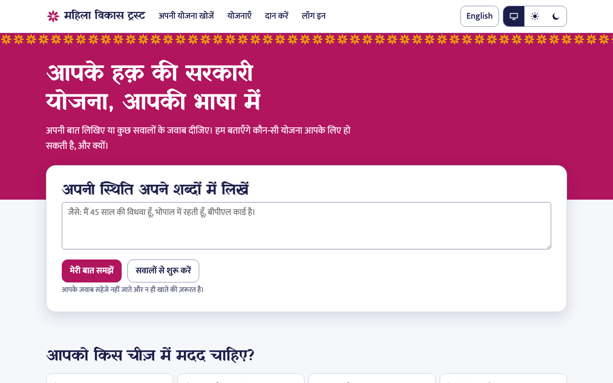
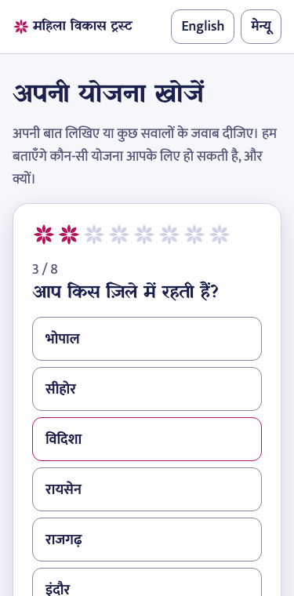
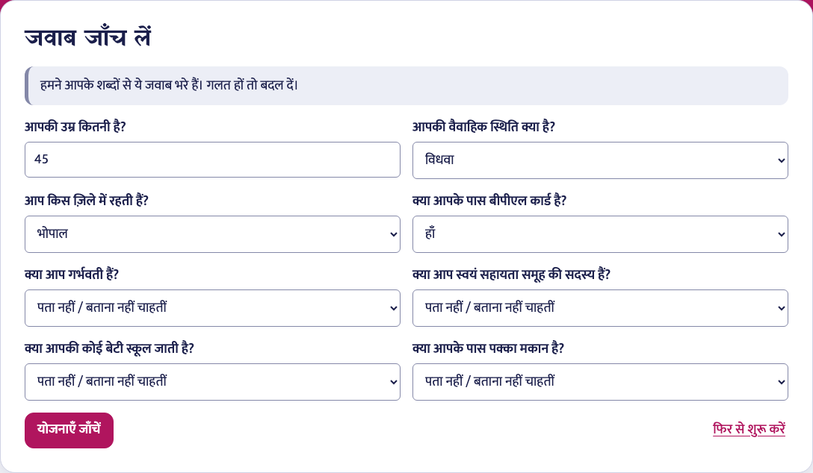
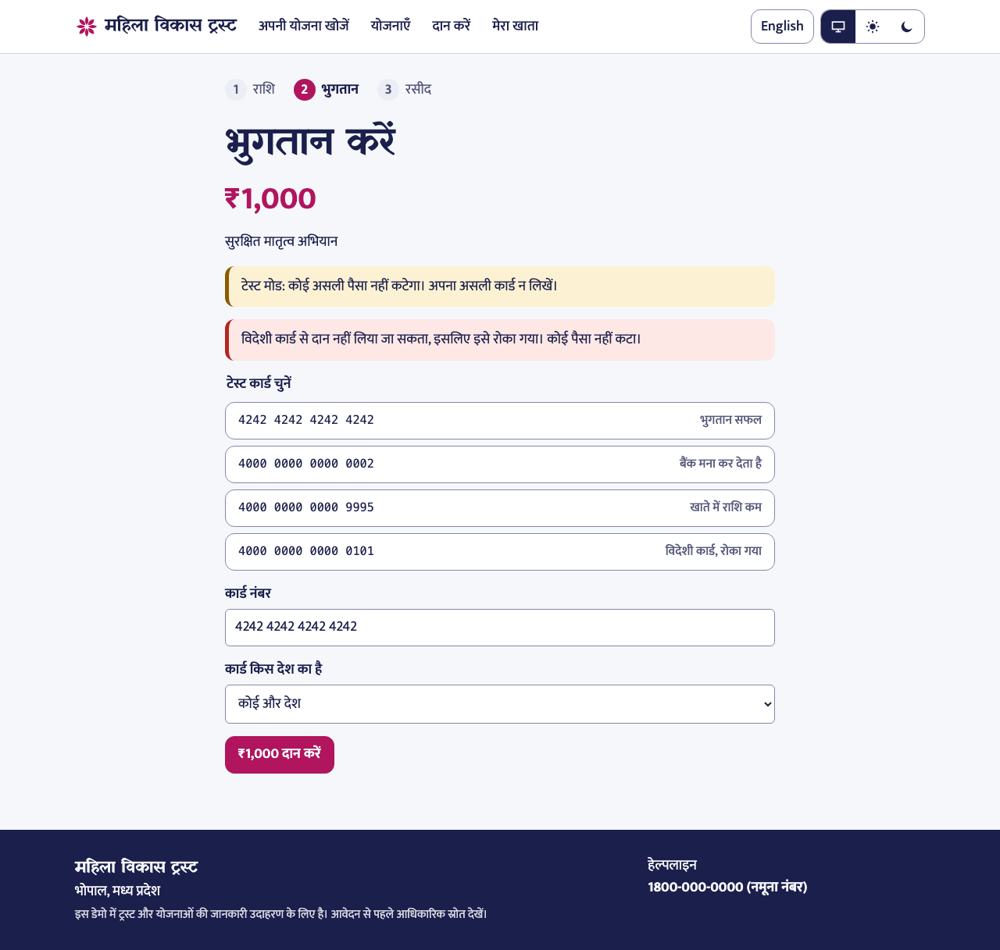
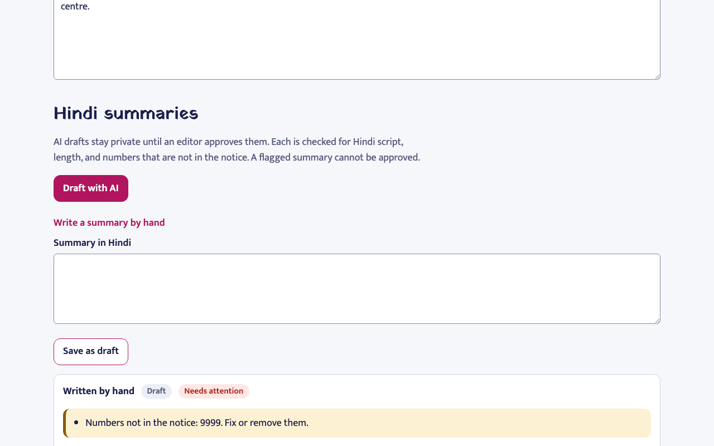
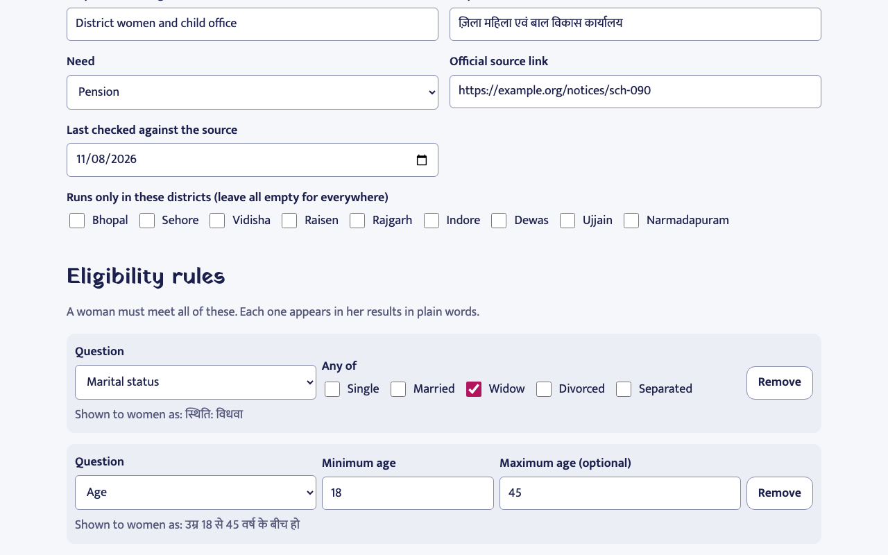
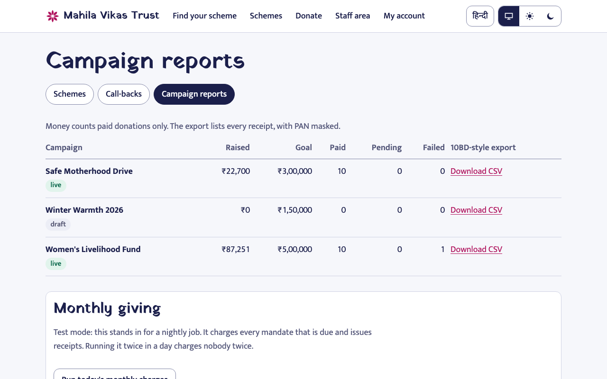
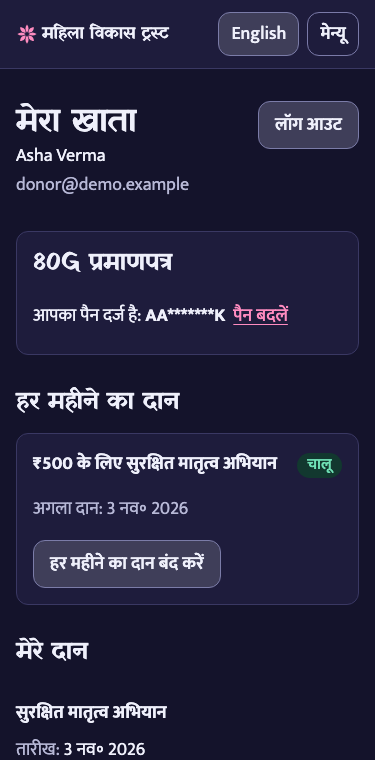

Technical Design Document. Take-home brief 2, the Bhopal women's livelihoods trust.
The core build works end to end on sample data: a home page led by a schemes finder, scheme admin, a donation with test payment, and an instant 80G receipt PDF. I chose depth in that slice over breadth.
Two users shape almost every decision. The first is a woman with limited reading time, probably on a phone, who reads Hindi and needs a straight answer about what she may get. The second is the trust's small office, which cannot afford a wrong number on a receipt or a wrong claim about a scheme. So the two parts that can really hurt someone get the hardest engineering: receipt numbering and eligibility answers.
| Must have | How it is met |
|---|---|
| Main flows, no dead buttons | 26 browser tests drive them on the production build |
| Frontend, backend, database, sign-in, roles | Next.js, FastAPI, PostgreSQL; donor, editor and admin roles checked on the server from the database |
| AI works, including when wrong or unsure | Section 5. Wrong output is caught, disagreement leaves a blank, and failure has a working path |
| Polished UI, phone, states | Section 6. Loading, empty and error screens exist for every data view |
| Tests and basic security | Sections 7 and 8 |
| Client goal (from the brief) | What in the product serves it |
|---|---|
| No manual receipts (₹9 lakh a year) | Receipt and 80G certificate issue in the payment transaction itself; nobody types a number. Section 4 |
| Retention from 22% to 32% | Monthly giving, a donor account with history and certificates, and a receipt that is clear and re-downloadable for ever |
| 50,000 finder uses in year one | The finder is the home page hero, needs no account, and works by typing, speaking or one question at a time |
| Helpline scheme calls down 40% | Every result says why, links the official source and last-checked date, and offers a call-back for what the page cannot settle |
| Donate in three steps at most, in two minutes | Gift, Pay, Receipt: a visible three-step strip on every donation screen |
These are the client's targets, not results I measured. The product is built so each can be measured later, which is why Section 10 asks to watch real users first.
| Table | Holds | Enforced by the database |
|---|---|---|
users | Role, hashed password, encrypted PAN and its masked form | Case-insensitive unique email; role values |
schemes | English and Hindi text, need, districts, source, last checked, rules as data, status | Status values; unique code |
scheme_summaries | Hindi summary, AI or human, check results, approver | An approved row must record who and when |
campaigns | Titles, goal, status | Status values; positive goal |
donations | Donor, campaign, paise, kind, status, failure reason, gateway reference | Rs 100 floor; unique (donor, idempotency key); unique gateway reference |
receipt_counters | Last number used per financial year | One row per year |
receipts | Number plus a snapshot of donor, PAN ciphertext, amount, campaign, trust | Unique (year, sequence); one per donation; a trigger blocks UPDATE and DELETE |
mandates | Monthly gift: amount, status, next charge date | One per first donation; Rs 100 floor |
callback_requests | Phone, optional name, scheme, language, status | Status and language values |
audit_log | Who did what to which record, and when | Append-only by convention |
A number is issued exactly once, only on payment success, and a rollback never burns one. In one transaction, in a fixed lock order:
PDFs render from the snapshot, so a re-download is identical for ever. Evidence: a test runs 200 payments, each delivered twice at once, and asserts sequence 1 to 200. Replacing the counter with MAX(seq)+1 makes it fail, so the test can catch the bug. I also measured it: three runs of 1,000 payments at 50 concurrent each took about 4.1 s, 239 to 245 per second, median about 98 ms, and every number was unique and gapless (one API process and local PostgreSQL on an 8-core Apple M2, no real gateway latency; script in backend/scripts). Treat this as a ceiling on the locking design, not a production figure. It is still several hundred times the roughly 0.5 per second that 5,000 payments in three hours requires.
Receipts are immutable, so the PAN has to exist when the snapshot is taken. The form asks for it before payment, explains why, and the pay page gives one more chance. Without a PAN the donor gets a plain receipt that says it is not an 80G certificate. I would rather be honest than print a certificate that does not hold up.
The card outcome is a pure function in the API. Only published test numbers are accepted, so nobody can type a real card. Declined, low-funds and foreign-card attempts record a reason, explain it, and can be retried on the same donation with no duplicate. A real signed webhook path shares the same code, and a paid donation can never be downgraded. A monthly gift opens one mandate; the month in the idempotency key stops an overlapping run from charging twice.
Draft to in review (editor or admin), to published (admin only). A published scheme cannot change in place, so what women see matches what was reviewed. Every transition is audit-logged. Publishing is blocked while a scheme has no rules, because a scheme with no rules would match every woman who uses the finder.
The principle: AI may draft and suggest, but it never decides eligibility and never publishes anything. A wrong rupee figure in a benefit could send a widow on a wasted trip to an office.
| Situation | What happens |
|---|---|
| Hindi summary of an official notice | |
| Model invents or changes a number | Every number must appear in the notice (handles Devanagari digits, commas and lakh). If not, it is flagged and cannot be approved |
| Output is not Hindi, or too short or long | Flagged the same way; checks run again on edit and at approval |
| Notice tries to instruct the model | The notice is fenced as data, and fence tags inside it are stripped |
| Model off, failing, refusing or cut off | The editor sees a clear message and writes it by hand, through the same checks and approval |
| Everything passes | Still a draft. Only an editor's approval makes it public |
| Typed question mapped to finder answers | |
| Normal case | Answers pre-fill a form she can see and change. Then the rule engine runs, not the model |
| Claude and the keyword reader disagree | The field stays blank and is marked unsure, since a wrong pre-filled answer is worse than a question |
| Age with no number in her text | Not trusted, left blank and marked unsure |
| Value outside the form (district, age 300) | Dropped; the other fields are kept |
| Model fails or there is no key | The keyword reader still works; the page words its message differently |
| Nothing can be read | She is told so and fills in the form |
| She speaks instead of typing | The "बोलकर बताएँ" button uses the browser's Hindi speech recogniser and puts the words in the same text box. She can edit them, and they take exactly the path above, so a misheard word is corrected on the review screen before any rule runs. The button is hidden where the browser lacks support, and a failed attempt says so and points back to typing |
The rule engine is pure and deterministic. Each rule is met, not met or unknown. Any not-met excludes; unknowns give "possibly". An unknown operator raises an error, never a silent pass. The product never says "you qualify". It says "likely eligible", shows every rule in plain words, and every result offers a person to call.
Limit I want to be plain about: the live Claude call has not been run with a real key in this build. It is tested against a fake client covering the request shape, fencing, refusals, cut-off replies and bad JSON. The keyword reader and every failure path were run for real in the browser. Text typed into the finder is not stored or logged, and a rate limit also caps spend.
The first version looked like every generated site: cream, terracotta, a heading and two buttons. The new identity comes from the client's world. The rani pink is a familiar colour of Indian textiles, and the haldi stamp strip is inspired by the block printing of Bagh in Madhya Pradesh. Yatra One, a Devanagari signage face, carries headings; Mukta carries reading text at a generous 18 px. Colours are semantic tokens, so light and dark are the same design.








age between [18,79]. A test fails if field names reach the screen.| Layer | Count | Covers |
|---|---|---|
| Backend (pytest, real PostgreSQL, real migrations) | 192 | Receipt concurrency and replay, April rollover, webhook signatures, cards, 80G, mandates, every AI failure above, rule validation, role denials, CSV injection, seed |
| Frontend unit (Vitest) | 17 | Question logic, rule wording, safe redirects, rupee format, voice transcript handling |
| Browser (Playwright, production build) | 26 | Every main flow and its failures; axe WCAG A and AA checks in Hindi, English, light and dark; no sideways scroll at 360 px |
These tests found real bugs in my own work. A retried payment kept its old failure reason, and successful logins were using up the login limit. The most serious showed up only in CI: the API sent its response before committing, because FastAPI runs the cleanup of a default-scope dependency after the response. A page could refresh and read the old row, and a failed commit would already have told a donor "paid". Every route now commits first, a test checks that order, and I re-measured the load figures above. ruff and mypy --strict are clean, and npm audit and pip-audit report nothing known. Automated accessibility checks catch only part of the problem; I have not yet done a full screen-reader pass.
| Assumption | |
|---|---|
| A1 | Scheme data is illustrative: the brief's sample rows plus schemes I invented. Source links point to example.org and are labelled as samples. |
| A2 | The nine Madhya Pradesh districts are my choice. |
| A3 | The trust's name, PAN, 80G number and helpline number are placeholders. |
| A4 | A PAN is required for an 80G certificate; without one the donor gets a plain receipt. The certificate shows PAN masked, a privacy choice the trust's accountant should confirm. |
| A5 | The 10BD export is a CSV with common columns, not the official utility format. |
| A6 | Foreign cards are blocked because no FCRA registration is assumed. It is simulated by test card and issuing country. |
| A7 | Monthly giving is a test-mode mandate. An admin button stands in for a nightly job. |
| A8 | Rate limits are per process, and depend on FORWARDED_ALLOW_IPS behind a proxy. |
| A9 | Financial year runs April to March; receipts look like RCPT/2026-27/000123. |
| A10 | Donors must have an account, since receipts need an identity. The finder needs none. |
| A11 | An editor role is added beside admin, so whoever drafts need not be whoever publishes. |
| A12 | Staff read English. Public screens are Hindi first. |
| A13 | Spoken input relies on the browser's speech service. In Chrome the audio is processed by the browser vendor's service, not by this product, which stores nothing. The page's privacy line is for typed text, so the trust should add a consent line before launch under the DPDP Act. |
| Cut | Why, and what it would take |
|---|---|
| Real payment gateway | Needs a merchant account. The webhook path is built for the swap |
| SMS or WhatsApp to the helpline team | Call-backs wait in a staff queue instead |
| A server-side speech model for Hindi | Voice input uses the browser's recogniser, so it is missing on some phones and browsers. A server model would work everywhere but needs consent, cost and retention decisions |
| Campaign editing screens | Campaigns are seeded; schemes got the admin effort since they are core |
| Official 10BD format, Hindi staff screens, shared rate limiter | Real but not needed to prove the core |
| Strict content security policy | The basic headers are set; a nonce-based policy is the next hardening step |
| Automatic deletion of old call-back numbers | A retention period is the trust's decision. It should be built before real use |
Next, in order: sit with two or three women and the helpline team and watch them use the finder; have the trust's accountant review the certificate wording; test voice input on real low-end phones and in the field; connect a real gateway; then add alerts for failed payments and model errors.